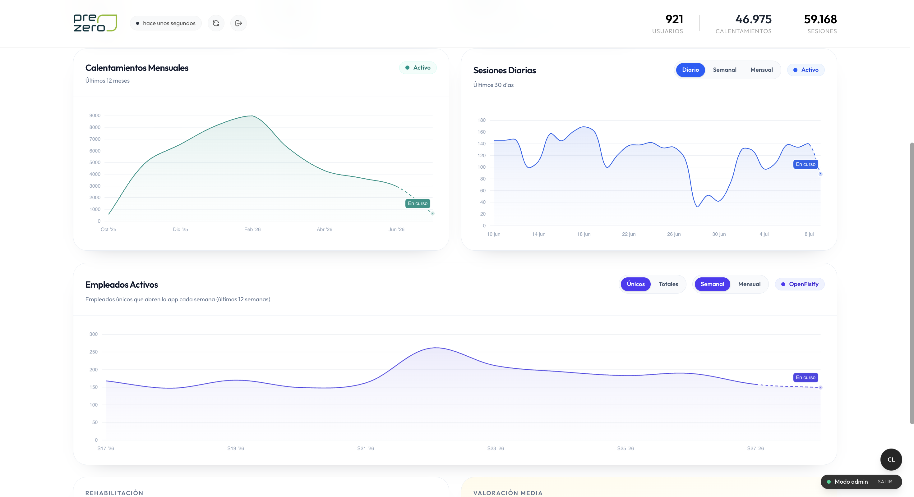
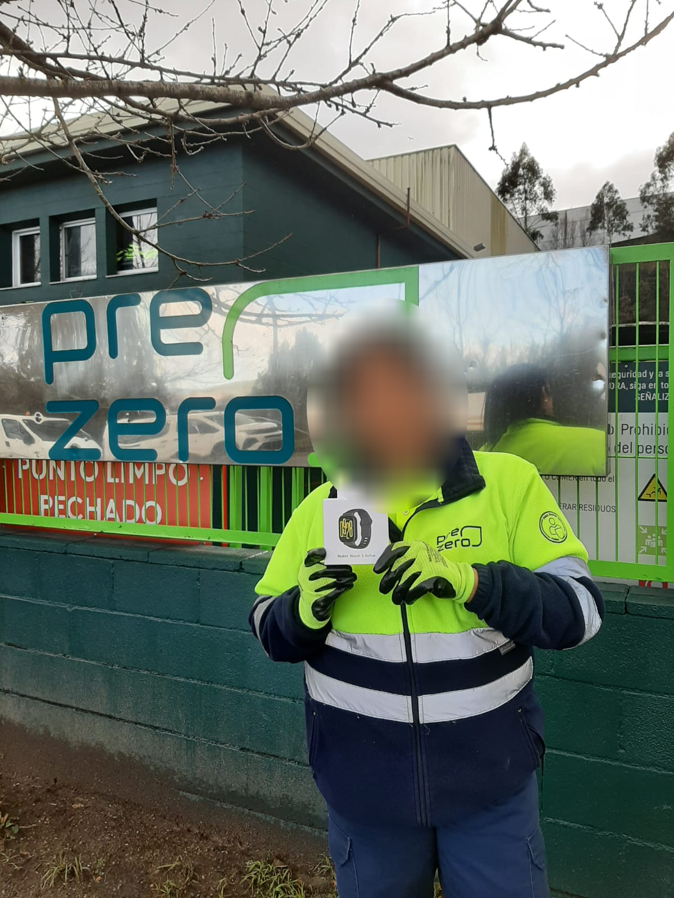
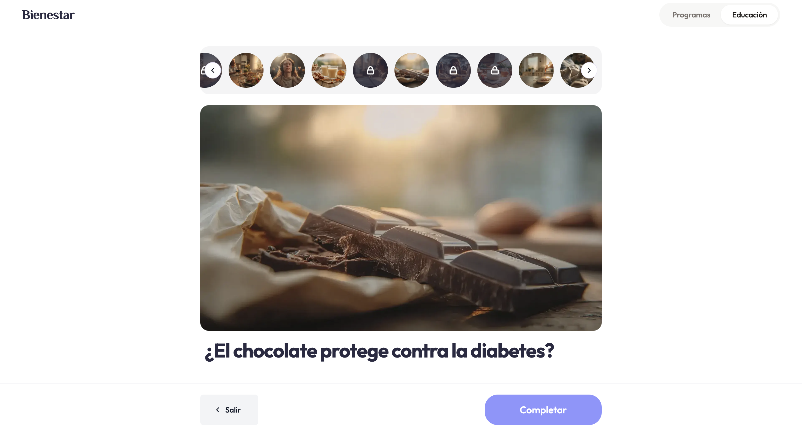

Cuidar a quien mantiene las ciudades limpias cada día
PreZero ha convertido la salud física de su plantilla en un sistema medible y continuo. Junto a Fisify, combina fisioterapia presencial, app móvil, prevención y seguimiento de la evolución musculoesquelética de sus equipos, un programa que sigue en marcha hoy.

Testimonios reales del equipo de PreZero y de Alex, su fisioterapeuta.
Trabajos exigentes, baja adopción digital y poca trazabilidad
Recogida de residuos, reciclaje, limpieza viaria o conducción: entornos donde el cuerpo sostiene el servicio diario. El reto no era ofrecer fisioterapia, sino un programa que encajara con una plantilla operativa, por turnos y con necesidades físicas muy distintas.
- Absentismo musculoesquelético en crecimiento los últimos 3 años.
- Baja adopción digital en buena parte de la plantilla.
- Centros, turnos y realidades operativas distintas.
- Poca trazabilidad del impacto.
Pasar de una sesión puntual de fisio a un programa continuo de salud física: accesible para cada turno, adaptado a cada centro y medible desde el primer día.
Un ecosistema de salud física para toda la plantilla, dentro y fuera del centro
Mantenemos Fisify como una estrategia continua de cuidado musculoesquelético para prevenir molestias, activar hábitos y medir la evolución real de cada equipo.
Onboarding personalizado
Cada empleado hace un test inicial y recibe un plan adaptado a su cuerpo, su dolor y su puesto. Ejercicios guiados de 3 a 10 minutos, listos para cualquier turno.
Fisio presencial + app 24/7
El fisioterapeuta pasa consulta en el propio centro y, además, la app atiende por videollamada, teléfono y chat. Cualquier molestia tiene respuesta de un fisio real, dentro y fuera del turno.
Precalentamientos al inicio de turno
Antes de empezar, los equipos activan el cuerpo con un calentamiento en grupo guiado por los vídeos de la app. Rutinas cortas y específicas por puesto que preparan la jornada y previenen sobrecargas.

FisifyEyes · panel realDatos para bienestar y RRHH
FisifyEyes, el panel anónimo y agregado, muestra adopción, estado de dolor y actividad de la plantilla, centro a centro. El equipo de bienestar ve, por primera vez, dónde actuar.

Mantener el hábito, mes a mes
Cuidarse solo funciona si se sostiene. Por eso Fisify combina juego y aprendizaje para que la plantilla siga entrenando mucho después del primer día.

SorteosSorteos mensuales
Cada mes sorteamos premios entre quienes entrenan con constancia. Un incentivo que dispara la adherencia y convierte el cuidado en un hábito compartido.

PíldorasPíldoras de educación en salud
Contenido breve sobre salud general (postura, descanso, ergonomía o nutrición) que llega a la app de forma regular. Cuidarse es también entender el porqué.
Cuando el cuidado es fácil, la gente lo usa
La plantilla adoptó Fisify y la sigue usando de forma sostenida en todos los centros. Estos son los datos reales de FisifyEyes.
El dolor baja, y se queda abajo
De cada persona que empezó con dolor, la mayoría mejora con su plan de rehabilitación. Y el efecto se sostiene en el tiempo.
La gente lo nota, y lo usa
Ha tenido una acogida buenísima entre los compañeros. El servicio cumple las expectativas y la gente está muy contenta.
Soy conductor, llevo 28 años y los huesos se me van notando. Con Fisify calentamos por la mañana y, cuando algo molesta, los fisios te preparan un ejercicio a medida. Totalmente recomendable.
¿Quieres este resultado en tu equipo?
Te enseñamos cómo Fisify se integra en la operativa de tu empresa y qué impacto puede tener en el bienestar de tu plantilla.